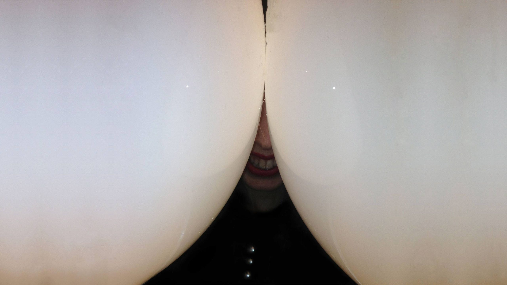

Black Irony Prison
Death Classic
Jun 11, 2025
System Blower
When they were introduced, he made a witticism, hoping to be liked. She laughed very hard, hoping to be liked. Then each drove home alone, staring straight ahead, with the very same twist to their faces.
The man who’d introduced them didn’t much like either of them, though he acted as if he did, anxious as he was to preserve good relations at all times. One never knew, after all, now did one now did one now did one.
-A Radically Condensed History of Postindustrial Life
And I know soon come my time For in mine void a pale horse burns But I fear not the time I've taken Past the point of no return Wage war like no tomorrow 'Cause no hell, there won't be one For all who deny the struggle The triumphant overcome (God is watching, God is watching) Beware
There are very few words on the internet that are still considered taboo to the terminally online. A generation raised on the internet without even the pretense of parental warnings or explicit labels does not just have thick skin but an unfeeling armor of scales when it comes to language. After years of online gaming and Xbox Live, even the most esoteric racial slurs slip by us like water on a duck’s back, but one word still exists that raises the arm hair on anyone unfortunate enough to hear/read it: “postmodernism”. The boogyman of the internet aristocrat, the one who prefers 4chan to Reddit, nightcore to lo-fi, and anime cat girls to the touch of an actual woman. Modern medicine and the marvels of scientific advancement haven’t firmly placed the biological or evolutionary cause of this reaction, but many speculate it began around the time of Jordan Peterson, and the outbreak seemed only to worsen during the great James Lindsey era that followed. This in tandem with what is medically referred to as, “hordes of online retards” and fake degrees ending in ‘ology’ or (Insert buzz word here) studies have driven this word into the ground and made it unusable in today’s discourse causing incredible harm and severe mental damage to anyone unfortunate enough to be caught within the twenty foot blast radius of its utterance or writing.
Despite its baggage (which is why we will be referring to it from here on out mainly as ‘the P word’ or POMO), the P word is crucial for understanding the state of the world today. The origins of POMO are debatable, but for our purposes, we will trace its origin back to Nietzsche and declare him its prophet. Nietzsche’s famous passage where he declares that ‘God is dead’ is the announcement and warning of the coming POMO age. Unfortunately, many did not heed his call, and even fewer understood the implications. POMO is best summarized by Lyotard, who considered it simply the rejection of all metanarratives, which is the logical reaction and consequence of the death of God. Despite the simplicity of the deceleration and the conformation by the coroner the death of God is not just a religious or anti-religious statement it’s much more fitting and accurate to replace God with Platonism; after all, according to Big Daddy Nietzsche Christianity was nothing more than a watered down version of Platonism for the unwashed masses. In a nutshell, the death of God meant not just the death of religious beliefs but any beliefs or truths predicated on the existence of something outside this world. Everything from objective capital T truth, morality, to science was/is built upon Platonic ideals/forms. Before POMO took hold, every chair had an essence. The physical manifestation of each object was just a corrupted version of some hyperobject, form, or a meta blueprint from which all other chairs were derived. In computer science, we call this a class1. But in the absence of these forms and in the wake of the death of Plato, God, and the author, human beings are left to determine what a chair really is since no essence or chairness exists from which all other chairs are derived. Must all chairs have four legs? Is it just a raised object that one sits on? Are objects only defined in terms of their utility and use? If one uses a chair to hit someone, does it stop being a chair and transform into a weapon? If so, when? On impact? When you pick it up? These questions may seem silly and unimportant, but when this line of questioning is applied to science, morality, rationality, or mathematics, one immediately comes to see the serious problems that occur once these Platonic ideals disappear.2 Suddenly, the neat, simple, objective, rational world of Newton, with God as a divine watchmaker, is thrown into chaos where even the fundamental ‘truths’ of physics have been reduced from certainty to probability. The pursuit of absolute truth or the pursuit of knowledge for knowledge’s sake becomes nonsensical and a quaint relic of the past. Science and objectivity are thrown into question and are no longer the handmaidens to truth but tools for power and profit in a language game that we are all forced to play.
Nietzsche understood this, he may not have known about the coming of quantum mechanics or what would be called ‘postmodernism’ but he saw the dangers ahead and if he was the Nostradamus of the coming POMO age then those that followed were simply weathermen reporting on the ground during the hurricane that Nietzsche forecasted long ago. This is where the majority of the confusion lies when discussing ‘postmodernism’ online, where viewers mistake reporting for advocacy. The P word is not an ought statement; it is a description of what IS, and many of those associated with the POMO movement did not even bother with prescriptions since this too was left behind in modernity along with classical mechanics. Like good disciples, they instead chose to sound the alarm bells and try to wake up the general population that seemed either not to care or not to notice that the God that held the world together now rests upon them, bleeding out into their hands. Given that they are supposed to be unwashed, you’d think that they would have noticed the red stain coating their fingers since they never clean themselves by definition, but despite this, they remained oblivious to the stink of death. Cue Baudrillard…
Artificial Death In the West
The aggregate result of all this pioneering science: a generation of teenagers lost in schizotechnic death-cults.
— CCRU (A-Death)
There was an artificial death in the West
— Death Grips
The P word is often associated with Marxism or, in the words of everyone’s favorite Canadian Kermit the Frog impressionist, “bloody Neo-Marxism,” even though most P words were not “Neo” but “Post” Marxist, as the name implies. Since the defining characteristic of postmodernism is its rejection of all metanarratives and since Marxism was itself one such metanarrative, it too had to be placed on the trash heap, despite what you may see online. God may have gotten the brunt of Nietzsche’s hammer, but all kings that took up the throne in an attempt to take his place eventually meet the same fate and are inevitably shown to have no clothes as their carcass is placed on the pile of modernity the stacked high with metanarrative corpses. Despite the confusion between POMO and Marxism, it would be a mistake to think that POMO was disinterested in economics; on the contrary, the P word, if anything, was an economic analysis where traditional currency was replaced with pure symbolic signs and meaning.
It’s easy to see how this new development in the post death of god/Platonism world would lead to a crisis of meaning, but this is often misunderstood as a lack of meaning rather than a surplus. This mistake has led some to misdiagnose the crash of the symbolic exchange economy as deflationary rather than hyperinflationary, and as a result, the money printer has remained on. This mistake was made most prominently by the existentialists, who have become the de facto belief system of modernity. Existentialism was a direct response to the death of God and the vacuum he left in his wake and like many they too mistook the poverty around them to mean that there was not enough currency in circulation and decided not just to let the money printer go brrrr but instead to give each citizen of the new POMO age their own money printer and made it their duty not just to leave it on but to crank it up to 11. We all make our meaning now, don’t believe me? Get a credit card and try it out for yourself. Meaning was no longer something out there; it was something each of us must form in some alchemical process from within. And when we found out there was nothing inside us, we were content with paying for someone else’s meaning with money we did not and will never have. It didn’t have to be logical or even meaningful, it just had to be ours since nothing says mine like a receipt with your name on the billing. Want love? K Jewelers. Purpose? Check out the self-help section or Andrew Tate’s new internet course. Want a job? Out-of-state tuition on a loan you’ll never pay back will guarantee you’ll never be able to go without one. Nietzsche saw far, but sadly, Sartre and those who live in his wake, well, unfortunately, physiognomy speaks for itself when it comes to just how well he saw. In the end, existentialism gave us a couple of trillion in debt, credit cards, and 20% + interest rates. For everything else, there’s MasterCard. But Baudrillard was not an existentialist or at least not an existentialist proper, not more than anyone else. Baudrillard was not concerned with how to make meaning but how meaning is made and how it is simulated, and he was not concerned with the meaning of life but the deflation of death and its inclusion into the marketplace of signs.
In a world where nothing is sacred, death itself has become a part of the symbolic exchange in the economy of signs. We hide death away in hospitals, we keep the elderly locked away from society in secluded homes, and yet everywhere it surrounds us. We traded in ‘real’ death for A-death, for a simulation on TV, and this is not an accident or a contradiction. Again, the POMO condition is an economic one, and nothing devalues currency more than overproduction. It’s hard to find a show or a movie now that is not saturated with death in some way and this has crashed the market faster than you can say ‘shitcoin rug pull’. Even when we are forced to deal with death in the ‘real’ world, it pales in comparison to television. The tears don’t come, there’s no final moment or grand speech, and you realize you had more emotional attachment to some guy on TV than dear old grandma. How were you supposed to relate to that old hag anyway? The bitch didn’t even have Netflix. Even our serial killers seem to have a more genuine reaction to death in our eyes. So when even the most ‘true’ inevitability of life is made artificial when the one fixture that makes us human and what demarcates life from non-existence becomes artificial, who do we turn to when our palms are too coated in blood to clasp our hands and pray for help?
Bottomless Pit
Post-Christian shit, post-chicken-or-the-egg-addiction shit
Pass the sherm stick, Neo-reality
Be the freak you wanna see, just don't follow me
Hacker
God may be dead, and along with it religion, but this did not kill the religious impulse in man; it only changed our relationship with it. Once traditional religions began to dwindle in popularity and sincerity, the emergence of spirituality began to overtake religion. The Western world began to develop a fetishistic interest in the esoteric, the foreign, and the P-word style spirituality. The new age movement is probably the most popular of these new POMO-style religions, or at least it’s the one with the most staying power, along with its subclasses like manifesting chaos magik, and affirmations. Like POM, the origins of this modern spirituality are murky. You could trace the whole thing back to the hermetic tablets, Gnosticism, or some Presocratic philosopher I’m not even aware of, but it doesn’t seem entirely unfair to credit Alister Crowley as the grandfather or prophet of postmodern religion. The satanic panic left a bad taste in everyone’s mouth, and because of that, the influence of Crowley and his disciples has been largely understated in the impact it has had on modern culture in an attempt to cover up for the fantastical stories and the overreaction by the media when it first went mainstream. Even though most people were not and are not members of Thelma or practicing occultists, its influence is present in everything from ‘The Secret’ to opera, and e/acc. What distinguishes modern or even premodern religions from their younger POMO brother is their strict rejection of classification or explicit canon. If we agree with Lyotard’s definition of POMO as the rejection or, at the very least, the questioning of all metanarratives, our minds should immediately jump to religion as being the most obvious and overarching grand metanarrative. This disbelief in metanarratives lowers these foundational structures of the world from unquestionable axioms to tools that maximize utility in some language game rather than the pursuit of some Platonic form or absolute divine outside truth. Crowley and those that followed, like Peter J Carrol, the creator of Chaos magik, understood this and took those principles and applied them to spirituality, where man no longer serves God but instead, God serves you. God was no longer in the story; he was no longer necessary, but the idea of God was still a powerful tool, even if you didn’t have faith that one existed. Chaos magik in this way is the ultimate utility-maximizing spiritual practice. It is a religion that has embraced POMO philosophy and is no longer concerned with theological truths; in fact, the truth is the enemy of the good under this framework. Only results matter to the chaos magician, no matter how much you have to deceive yourself into getting them, and no matter how much these results are just a result of psychologically manipulating oneself. It is a spirituality beyond good and evil… There are no rules or doctrine, only practices, and if God remains silent, then try something else until you hear something respond, even if that voice is the devil or your own delusions. Hearsay is the only religious virtue in this school of thought. Things like chaos magik and the occult were not just responses to the death of God and the postmodern condition but hyperreal embodiments of its philosophy. There was no true codified canon; practitioners were free to pick and choose different spiritual practices and beliefs from any religious system and integrate them into their own Frankenstein’s monster of tools. Even belief itself was optional. Rituals in chaos magic are not literally magic, but the performance and the choice to believe and partake in them are what give these acts power. What became sacred was not so much the act itself but the choice to act. Knowing you were engaging in something profane and nonsensical and purposefully willing yourself to suspend your disbelief anyway is what made it ‘true’ and ‘divine’. This, for chaos magicians and all Crowley-inspired religions, is what magik really is. It is admittedly not ‘true’, but that didn’t matter. This is what made it magik: belief had died long ago, so they embraced only the performance and the aesthetics.
The witchy and darker elements of these practices were eventually discarded and made more palatable for the masses and transformed into the more hippyish practices we see today. Dark robes and pig’s blood went out of style and were replaced with dreadlocks, patchouli, and jacking off on vowels (I wish I were joking). Even though there is no single movement today as big as the ones in the 60s and 70s, a quick Youtube of ‘manifest’, ‘tarot cards’, ‘astrology’, ‘magik’, etc, will yield you millions of videos with an obscene amount of views. It is difficult to talk to someone who does not incorporate at least some of these beliefs into their daily life. Out are the days of the old boring religions where you must serve and sacrifice, God is dead, and we drew a sigil in his blood. For God’s sake, the church of Satan doesn’t even claim to believe in Satan; instead, it is a collection of ideas and liberal values. It should also be noted that this is not just a low-class or uneducated belief system. Many successful, seemingly intelligent people have essentially taken on or accepted parts of Crowley’s religious beliefs. The influence of psychedelic drugs, P.K.D flavored Gnosticism, and rationalist cultism is well known to circulate in Silicon Valley among the tech elites, but even back in Crowley’s days, brilliant scientist and the founder of the Jet Propulsion Laboratory, Jack Parsons was a close friend of Crowley and actively participated in Thelma rituals. This is just to say that even though the ‘satanic panic’ was a poorly researched media creation that focused on devil worship and human sacrifice, the truly ‘dangerous’ element of these (post)modern religions was left uncritiqued and unnoticed until it spread and became a fixture of the current culture.
Lost Boys
Once upon a time we would obey in public, but in private we would be cynical; today, we announce cynicism, but in private we obey.
-TLP
Scrapin all talk no action, what
I’m waitin’
Lost Boys
Up until this point, I have given a brief, somewhat scattershot summary of how POMO has been misunderstood and some of the effects the death of God (which we call POMO) has had on the world and permeated through our culture. Despite this, we have not returned to the source to see what Big Daddy Nietzsche predicted would happen after Dorthy realizes she is not in modernist Kansas anymore. For Big Daddy N, the death of God and the coming of POMO also signaled the arrival of a new type of man, something he called ‘The Last Man’. The Last Man is not just a great name for a condom that helps you last longer in bed; the Last Man is essentially an apathetic man of comfort, and as TLP emphasizes in his book, he is a man incapable of action. There are many critiques of the P word, but few, if any, address this problem of inaction. For Kierkegaard, each action required a leap of faith, but as we’ve seen above, faith is not a part of the postmodern condition. Zeno, in the end, seems to have won out, and we have become paralyzed with anxiety at the infinity of uncertainty before us. We no longer act but react, and have been sent into a spiral of anxiety-induced dizziness, trapped by our freedom. In the words of Alister Crowley, and what is a very good credo for the POMO age, “Do what thou wilt shall be the whole of the law”. But it seems as God fell, so too did our ‘wilt’ and our want. This is exactly what Nietzsche predicted when he spoke of the coming of The Last Man, a creature not of immense evil or cruelty but of apathy and soft comforts. A creature who is only able to think of himself as a man and not a stagnant, dead beast, because of the culture that he values above all, and which he uses to place himself higher than the other animals. This, he tells himself, is what makes him alive. A creature of inaction, pure hibernation, a beast that cannot act, he can only dream, and when a man is even too fat for that, he is content to fill himself with the dreams of others.
Culture Shock
"Fuck where you're from, Fuck where you're going, It's all about where you're at!"
-Lord Of the Game
I believe, with Hegel, that transcendence is absorption
-Infinite Jest
Despite postmodernism originally being considered an art movement, very little art made today could be considered POMO. This may seem surprising since any time you go online, you can’t help but stumble upon people bemoaning the subversive ‘postmodern’ elements of art today, but this couldn’t be further from the truth. Sure, you can go to the hipster part of town and wander into a museum and see things plastered on the walls akin to kindergarten doodles but for the most part art today is incredibly modern and even the chicken scratch scribbles you can find in museums can hardly even be considered truly postmodern since most of that art is following a metanarrative of what they believe POMO art should look like which ironically stops the art from being truly postmodern. Much of the art and culture today that is considered postmodern isn’t about destroying metanarrative; instead, art wears postmodernism as a sort of guise to feed viewers as it upholds the culture and values of the last man under the pretense of subversive transgression. Despite this, there is still value in modern culture and art if only because it is here that we can find and dissect the return of the repressed. For TLP, the ‘return of the repressed’ is a mechanism where the subconscious gives you a supposed ‘leak’ of your hidden, 'real' wants or ‘secret truths’, but this leak is not a bug but a feature of the unconscious. It is a clever trick of false breadcrumbs left intentionally to be misinterpreted and to make those who engage with it feel that they have solved whatever problem or mystery they sought out trying to find in order to distract from the real path. In his book Sadly Porn TLP talks about how the Oedipal concept was accepted despite how fantastical it sounded because readers could not accept our own desire not to act. It was more comforting for us as a culture to believe that we all secretly want to fuck mommy and daddy than admit to wanting to be kings without the responsibility of having to govern. This is likely why many who bemoan how POMO art is today accept the surface-level interpretation of its transgressive system-challenging mask. This critique protects both critics and fans alike from seeing what is truly repressed. Take for example the film Thor: Love and Thunder, A Marvel movie about a man who seeks to kill the Gods. Given that we began this piece by tracing the origins of POMO back to Nietzsche and the death of God, it would seem that a plot could not get more P-worded than this. Clearly, the message of the film represents our acceptance of the death of God, our acknowledgment that it was we who killed him, and how it is now time to move on and love one another. Or maybe you think this is a way for Hollywood elites to brainwash us and make us lose faith. Sadly, both of these interpretations are far too obvious and not what is really repressed, and this is just the sugar to help the medicine of passivity go down smoother. The plot of the film is about what you’d expect from A Disney movie playing Nietzsche. In the film, Love is the child of the main antagonist, who seeks to kill all gods. She dies in the opening scene, a God refuses to save her father (the main antagonist) and his people. At first, the antagonist was a devoted believer, but after meeting the gods, he became disillusioned and got a magical sword that could kill the Gods. Adventures ensue, and we find out there’s a place at the edge of the universe that can grant wishes. Also, Thor, our protagonist, has an ex-girlfriend who is dying of cancer, I guess. Also, the main bad guy is dying cause I guess the sword is bad for you. In the end, the big baddie makes it to the cosmic wishing well but does not ask for all the gods to die, but instead asks to have his daughter Love resurrected so he can spend his final moments with her. “So it’s about how we actually can’t accept the death of God”. Again, no. Love only returns when both the main antagonist and Thor’s GF are dying. We can only love when we have no responsibility, when it is already out of reach. We are only capable of feeling when they are gone and exist only as a part of our imagination, or better yet, someone else’s imagination. The film has little to nothing to say about God. If anything, they are just an excuse, a reason why we cannot love. Love is dead, remember. “But she comes back in the end”. “I don’t know, man, are you sure I didn’t see her in any of the sequels?”.
This may feel like a digression, and maybe it is but it's meant to show that even art that is about how we are free of God and able to love and be as we wish secretly resent this and desire for anything to free us from our responsibility of having to act in the face of this freedom. To be able to love only when it is unburdened by reality or responsibility. When it is porn and not sex. Even in the art that is considered transgressive and truly POMO, like Death Grips, we see the same trick. The song System Blower by Death Grips is seemingly about blowing up the system, revolution, and action. But much like the name Death Grips, this is all posturing, a joke, another cultural artifact for the last man to look at to affirm his superiority while taking no action. Death Grips is not a badass metal name; it’s internet slang for the sensation you get after jerking off for too long, and System Blower has a similar message that the band either intentionally or not repeats throughout their songs. They aren’t blowing up the system; they are literally blowing the system. They aren’t transgressing or revolting against it; they are the ones making it harder, or at least harder to escape from it. The circular and seemingly self-defeating nature of POMO is also what makes it difficult to escape from because it’s a circular ouroboros, and there is no way out.
This is Violence Now
“Ya we came to blow your system”
-System Blower
One of the main catchphrases of POMO brought to you by Derrida is that “there is nothing outside the text”. For P words truth is not a stagnant or outside ideal; it is not something that is fixed and that can be captured. Because of this context is everything, and so one must always return to the text and reinterpret it to create more lowercase t truths for the current time and place. Whether or not you agree with the postmodern view of epistemology is irrelevant; this is simply the way of the world now, and any path out must at least acknowledge this fact. Many have tried to find ways out of the POMO condition, maybe the most famous of them all is author David Foster Wallace. Wallace is known for his home-brewed remedy offered up against the postmodernists of his time, something he called new sincerity, which was supposed to be an escape hatch into a new era of art. By and large, new sincerity has been a massive failure, and his anecdote was unfortunately far too weak for any sizeable cultural shift in any direction, with the brew sadly failing to save even his own life. Even despite the failures of Wallace’s literary movement, something about new sincerity still seems to enchant readers who first stumble upon the term. Although he has an explicit essay/manifesto on the proposed movement, Infinite Jest is what most people turn to when looking for examples of the style and philosophy. Wallace’s famous novel was by no means a modernist story, and the text was purposefully constructed to have a postmodern form despite his attempts at making it a guidebook for his new proposed movement that was in direct competition with POMO. Although Wallace's attempt to move beyond the P word failed his attempt was valiant, and he understood that even if you seek to move past POMO you must engage with and through it if you ever hope to move past it, past it just means prepended another post to the word modern. This isn’t to say that the only way out is through, but total rejection is impossible. What Wallace attempted and what was made clear in The Pale King, which he sadly never finished, was that new sincerity must be a shift in the interpretation of Derrida's interpretation that there is “nothing but the text”. Paradoxically the new interpretation of Derrida’s catchphrase has to be one that totally lacks any interpretation which is not to say that we deny the death of the author but that we accept the death of ourselves and take Derrida at his words that there is nothing but the text. I believe what Wallace was trying to advocate for in his writing was not for interpretation but for a sort of embodied understanding that can conquer the problem of infinite regress. In Wallace’s own words, “I believe, with Hegel, that transcendence is absorption”. Wallace was famously obsessed with the infinite regress of signs and symbols, and much like the postmodernist, he understood that all truths conjured through symbols must necessarily be, if not outright falsehoods, then at least perversions prone to a recursive search of definitions until a stack overflow occurs. In many ways, this is the founding tenet of postmodernism, the problem of symbols and how they leave us unable to see the real or noumenal world, and yet the only way we even know that a real world is out there is by engaging with these signs. This is what I believe Wallace was struggling to grapple with when he proposed New Sincerity, and his inability to put it into words in The Pale King is what I believe ultimately killed him. Wallace tried to do the impossible; he tried to put words to a philosophy of embodied knowledge outside of signs and language that treats the text as not something to reinterpret but something to engage with so fully that you lose yourself in it until whatever truth that may be in there becomes a part of you. Some truth not known but acted upon. The difference between Wallace and the postmodernists is that Wallace believed this type of transcendence was possible. Since Wallace was an athlete, he had come in contact with what all competitors experienced at some point, which is the almost mystical state of ‘flow’ or what is often called ‘the zone’. This concept has come up frequently in my writings, which is unfortunate because it is a concept impossible to put into words, since by definition, it is the state where you almost do not exist. In the zone, you feel as if you are being guided by something larger, but you only feel the hand pulling you long after it has already happened. This state is something outside of language, but anyone who has become completely immersed in an activity can attest to the validity of this state. This flow or embodiment is the only way to overcome the last man or to transcend a kind of infinite cycle of eating our tale as the world dives further and further into postmodernism and infinite regress. I hesitate even to write this because it is itself a symbol, but also because Wallace, who was a much brighter and sharper mind than mine, tried and failed to both articulate and provide a way out of the cave. I have no better paths or some brilliant strategy that is ensured to get us out of postmodernity, but I think in the most Wallace way possible, it is best to leave on an overly sentimental, nostalgic story that I hope illustrates, if not the point, then at least something I dare not speak.
On the first real date I ever went on, when I dropped the girl back off at her parents’ house, I walked her to the porch. We stood there for a while, each of us trying to extend the moment for as long as we could. She was waiting on me, trying to set the mood and find that line in the script that triggered the male protagonist to step in for the first kiss as the music swells. Her parents were Bay Area hippies, and her doorway was covered in plants. I told her I liked the flowers, not knowing what to say, and she told me the name of the one I said I liked. I don’t remember the name, but she explained to me that she liked flowers because they were perennials. Each of them had a predictable cycle of life, death, blossoming, and wilting. I nodded my head stupidly and knew this was the line the screenwriter had given her. I knew this was the moment. Intellectually, I could feel that this was the time that lips were supposed to meet, and yet I remained frozen and unfeeling. Instead, I asked her if that was a metaphor for something, if that line she just fed me meant something, or if it held some greater significance. She smiled at me very politely, the way pretty girls are taught to smile at stupid boys, before she shook her head while laughing. She said no before thanking me for the date and walking back inside. I never saw her again, but often I think about that night and how I knew but could not act.